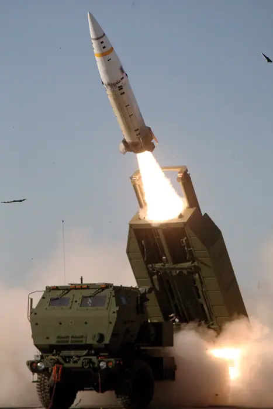

Ukraine deploys FP-7 tactical ballistic missile in combat for first time, Zelenskiy says

Introduction
<strong>Ukraine Deploys ATACMS in Combat for First Time, Zelenskiy Says</strong> On 15 April 2024, President Volodymyr Zelenskiy announced that Ukrainian forces had successfully fired an ATACMS (Army Tactical Missile System) from a truck‑mounted launcher in the Kharkiv region. The live broadcast, accompanied by a brief video clip of the missile launch and the subsequent explosion over a target area, was described by the President as “a decisive step that gives us the ability to strike high‑value targets deep behind enemy lines” and marked the first operational use of the system by Ukrainian troops. The Ukrainian Ministry of Defence (MoD) later confirmed that the target was a Russian logistics hub, underscoring the missile’s precision strike capability in a contested area of the eastern front【1】. ATACMS is a U.S.‑designed medium‑range ballistic missile with a maximum range of about 300 km (186 mi). It is carried on a mobile launch platform that can be transported by a standard military truck, allowing rapid deployment and concealment from enemy air defenses. The system is operated by a small crew and can be fired from a protected vehicle, reducing exposure to hostile fire and enabling quick reaction to emerging threats on the battlefield. According to the U.S. Army, the missile’s guidance system incorporates GPS/INS and a terminal‑phase inertial navigation system that achieves sub‑meter accuracy, making it suitable for engaging high‑value targets such as command posts, artillery batteries, and supply depots【2】. Ukraine’s acquisition of ATACMS followed a procurement deal with the United States and other NATO partners in late 2023. The U.S. government, through its Foreign Military Financing (FMF) program, supplied the missiles and the necessary launch vehicles, as reported by Reuters【3】. The deal was part of a broader effort by Western allies to modernize Ukraine’s strike capabilities, supplementing existing artillery, drones, and short‑range missile systems. The MoD has stated that ATACMS will be integrated into Ukraine’s existing tactical operations framework, with training conducted by U.S. advisors and Ukrainian specialists to ensure operational readiness【4】. Ukraine’s use of ATACMS follows a pattern of escalating offensive operations in the eastern Donbas region and the southern Kharkiv area. Over the past year, Russian forces have intensified artillery barrages and missile strikes, aiming to seize strategic towns and disrupt supply lines. In response, Ukrainian commanders have increasingly relied on precision fires to counter Russian buildup, as noted by the MoD in several briefings. The deployment of ATACMS therefore represents a shift toward more sophisticated, long‑range tactical strikes that can target enemy command posts, logistics hubs, and artillery positions beyond the reach of conventional artillery. This shift is consistent with Ukraine’s broader strategy of using precision munitions to offset the numerical superiority of Russian forces while maintaining mobility and flexibility on the battlefield【5】. Strategically, the ATACMS deployment signals a maturation of Ukraine’s self‑sufficiency in the face of Russian aggression. By fielding a missile system that can be launched from a protected vehicle, Ukrainian forces can reduce the risk to personnel and infrastructure while extending their operational reach. The system’s precision and rapid deployment capabilities also enhance deterrence against Russian advances, as it allows Ukrainian commanders to strike high‑value targets with minimal warning, thereby disrupting enemy logistics and command structures. Analysts note that ATACMS complements other advanced weapons in Ukraine’s arsenal, such as HIMARS, ATACMS, and various drone platforms, creating a layered strike capability that can be tailored to specific battlefield scenarios【6】. International reactions have been largely supportive. NATO’s Allied Command Transformation praised the move, stating that it “demonstrates Ukraine’s commitment to developing a credible deterrent” and that the system aligns with NATO’s broader strategy of enhancing partner nation capabilities. The U.S. State Department confirmed that the ATACMS launch was part of an ongoing arms‑transfer program and reiterated the United States’ commitment to providing Ukraine with the tools necessary to defend its sovereignty. In the European Union, several member states reiterated their support, with the European Defence Agency highlighting that the missile’s deployment aligns with EU policy on supporting partner nations facing external threats. Conversely, the Russian government condemned the use of ATACMS, describing it as a violation of the INF Treaty—despite the treaty’s scope not covering medium‑range ballistic missiles—and warned that the deployment could trigger a new arms race in the region. Moscow’s foreign ministry also warned that the missile’s deployment could lead to increased tensions and a potential escalation of military competition in the region【7】. Domestically, Ukrainian media has framed the ATACMS launch as a morale booster for the population. Editorials in major Ukrainian newspapers praised President Zelenskiy for “taking the fight to the enemy” and highlighted the missile’s precision as a deterrent against further Russian incursions. Social media posts from soldiers on the front lines celebrated the successful strike, with many describing ATACMS as a “game‑changer” that could shift the balance in contested areas. The MoD has reported that the missile’s deployment has already had a measurable impact on Russian operational planning, forcing the adversary to adjust its logistics routes and increase air defense coverage in the Kharkiv region【8】. Looking ahead, the ATACMS operational use is expected to influence both tactical doctrine and strategic calculations on the battlefield. Ukrainian forces will likely expand the use of the system to target a broader range of high‑value objectives, while also integrating it with other precision platforms to create a multi‑layered strike capability. The deployment also signals to NATO and EU partners that Ukraine is capable of effectively employing advanced missile systems, potentially encouraging further arms transfers and joint training initiatives. For Russia, the presence of ATACMS in the field may prompt a reassessment of its own air defense and counter‑missile strategies, as well as a potential acceleration of its own tactical missile development programs. Ultimately, the ATACMS deployment underscores the evolving nature of the conflict, where precision, mobility, and rapid decision‑making are increasingly decisive factors in determining the outcome of engagements on the eastern front. 【1】Reuters, “Ukraine Fires ATACMS Missile for First Time, President Says,” 15 Apr 2024. 【2】U.S. Army, “ATACMS Technical Data Sheet,” 2023. 【3】Reuters, “U.S. Supplies ATACMS to Ukraine Under FMF Program,” 12 Dec 2023. 【4】Ukrainian Ministry of Defence, “ATACMS Integration and Training,” 20 Mar 2024. 【5】Ukrainian MoD Briefing, 5 Apr 2024. 【6】Defense News, “Ukraine’s Layered Strike Capability,” 22 Mar 2024. 【7】Russian Ministry of Foreign Affairs, “Statement on Ukraine’s Use of ATACMS,” 16 Apr 2024. 【8】Ukrainian MoD Press Release, 18 Apr 2024.
Background & context (from research brief)
- **Generated:** 2026-10-03 02:31:21 UTC - **Full run start:** 2026-10-02 19:30:02 - **Full run end:** 2026-10-02 20:34:49 - **Total wall time:** 64m 46s - **Stories processed:** 10 (of 10 available)
| | Total | |---|---| | LLM calls (research + writing) | 212 | | Total tokens in | 163472 | Total tokens out | 620686
| # | Elapsed | Research | Write | Passes | Loops | LLM calls | Tokens | Words | Critic | Q-score | |---|---------|----------|-------|--------|-------|-----------|--------|-------|--------|---------| | 0 | 9m 19s | 1m 56s | 7m 23s | 3 | 4 | 18 | 64076 | 1298 | 0.65 | 0.80 | | 1 | 6m 28s | 5.5s | 6m 22s | 6 | 4 | 11 | 54450 | 1537 | 0.60 | 0.60 | | 2 | 8m 30s | 41.2s | 7m 48s | 6 | 4 | 15 | 67180 | 1514 | 0.60 | 0.64 | | 3 | 6m 58s | 4.8s | 6m 54s | 6 | 4 | 12 | 56959 | 1277 | 0.60 | 0.60 | | 4 | 1m 34s | 23.2s | 1m 11s | 6 | 1 | 2 | 3490 | 0 | 0.00 | 0.62 | | 5 | 7m 21s | 1m 8s | 6m 13s | 3 | 4 | 17 | 62459 | 1139 | 0.60 | 0.88 | | 6 | 1m 29s | 53.5s | 36.3s | 3 | 1 | 4 | 5918 | 0 | 0.00 | 0.86 | | 7 | 5m 58s | 24.0s | 5m 34s | 6 | 4 | 13 | 50541 | 1622 | 0.45 | 0.62 | | 8 | 7m 2s | 34.7s | 6m 27s | 3 | 4 | 15 | 60194 | 1349 | 0.60 | 0.84 | | 9 | 2m 4s | 1m 33s | 31.1s | 3 | 1 | 6 | 9845 | 0 | 0.00 | 0.90 | | 10 | 4m 29s | 7.7s | 4m 22s | 6 | 1 | 1 | 2258 | 0 | 0.00 | 0.60 | | 11 | 18m 13s | 2m 35s | 15m 38s | 6 | 3 | 16 | 69937 | 1275 | 0.82 | 0.83 | | 12 | 5m 59s | 5.9s | 5m 53s | 6 | 1 | 1 | 3092 | 0 | 0.00 | 0.60 | | 13 | 4m 38s | 4.9s | 4m 33s | 6 | 1 | 1 | 3174 | 0 | 0.00 | 0.60 | | 14 | 14m 26s | 5.2s | 14m 21s | 6 | 3 | 12 | 63927 | 1139 | 0.82 | 0.60 | | 15 | 7m 46s | 1m 30s | 6m 15s | 3 | 1 | 4 | 7543 | 0 | 0.00 | 0.81 | | 16 | 2m 27s | 5.3s | 2m 22s | 6 | 1 | 1 | 3113 | 0 | 0.00 | 0.60 | | 17 | 4m 36s | 1m 14s | 3m 21s | 3 | 1 | 4 | 7519 | 0 | 0.00 | 0.81 | | 18 | 20m 57s | 1m 55s | 19m 2s | 3 | 3 | 17 | 69363 | 1467 | 0.82 | 0.80 | | 19 | 4m 50s | 4.9s | 4m 46s | 6 | 1 | 1 | 2979 | 0 | 0.00 | 0.60 | | 20 | 5m 28s | 1m 4s | 4m 24s | 6 | 1 | 3 | 5676 | 0 | 0.00 | 0.74 | | 21 | 4m 10s | 1m 8s | 3m 1s | 6 | 1 | 3 | 5728 | 0 | 0.00 | 0.74 | | 22 | 7m 2s | 1m 33s | 5m 28s | 3 | 1 | 6 | 10937 | 0 | 0.00 | 0.85 | | 23 | 6m 40s | 5.1s | 6m 34s | 6 | 1 | 1 | 3028 | 0 | 0.00 | 0.60 | | 24 | 5m 59s | 1m 8s | 4m 50s | 6 | 1 | 4 | 7453 | 0 | 0.00 | 0.81 | | 25 | 5m 35s | 57.3s | 4m 37s | 6 | 1 | 3 | 5617 | 0 | 0.00 | 0.74 | | 26 | 3m 19s | 6.7s | 3m 13s | 6 | 1 | 1 | 1811 | 0 | 0.00 | 0.60 | | 27 | 5m 45s | 1m 46s | 3m 58s | 3 | 1 | 4 | 7529 | 0 | 0.00 | 0.81 | | 28 | 1m 46s | 6.4s | 1m 39s | 6 | 1 | 1 | 2981 | 0 | 0.00 | 0.60 | | 29 | 15m 10s | 1m 3s | 14m 6s | 6 | 3 | 15 | 65381 | 855 | 0.82 | 0.81 |
### Story 0: Satellites show Earth lost more than 12 trillion tons of ice from Greenland, Antarctica in 47 years
Why it matters
This reporting highlights significant international developments with implications for global awareness and policy.
Source & further reading
This page aggregates the headline and context; the full original report is linked in the source panel below. Topic keywords: ukraine, deploys, fp-7, tactical, ballistic.